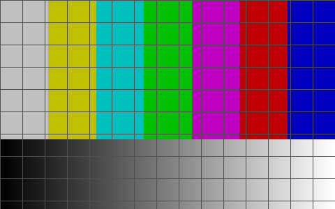

A tiny, dependency-free command-line tool to convert, resize, crop, filter & composite images — an ffmpeg-style alternative to ImageMagick for still images, with agent-native JSON output.
Real, reproducible numbers — run bench/bench.sh yourself.
Mean time per invocation (lower is better), Apple Silicon, steady state.
| Metric | imgcli | ImageMagick | Advantage |
|---|---|---|---|
| Install footprint | 232 KB | ~109 MB | ~470× smaller |
| Third-party dependencies | 0 | 17 packages | none to install |
| Resize 1200² → 300w | 6.0 ms | 51.6 ms | 8.6× faster |
| Grayscale 1200² | 48 ms | 389 ms | 8.0× faster |
* Honest caveat: ImageMagick is a far broader toolkit (16-bit/HDRI precision, colour management, 200+ formats, advanced resampling). imgcli is a lean 8-bit RGBA pipeline — part of its speed is doing less, more directly. Full methodology & caveats: bench/RESULTS.md.
One binary, an ffmpeg-style filtergraph, every output below rendered by imgcli.

# resize keeping aspect, desaturate, soften — one pass
imgcli -i photo.jpg -vf "scale=1024:-1,grayscale,contrast=1.2,gblur=1.5" out.pngA single self-contained binary that needs only libc. Nothing to apt install, no dependency tree, no version conflicts.
Chain operations: -vf "scale=800:-1,crop=400:400,sepia,gblur=2". 29 filters across geometry, colour, convolution and compositing.
--json structured output, stable exit codes, fully non-interactive. Deterministic and token-economical for AI agents.
Audited against OWASP/CWE and ffmpeg's CVE classes. Dimension caps, overflow-safe allocation, hardened build, fuzzed, ASan/UBSan-clean. No network, no subprocesses.
# Homebrew (macOS / Linux)
brew install swperb/tap/imgcli
# Arch Linux (AUR)
yay -S imgcli # or: paru -S imgcli
# From source — only a C compiler + libm required
git clone https://github.com/swperb/imgcli && cd imgcli && make && sudo make installPrebuilt Linux/macOS binaries on the releases page.
imgcli ships an MCP server
(imgcli-mcp on npm, listed in the official MCP registry) so agents call
convert_image, probe_image and list_filters directly.
{
"mcpServers": {
"imgcli": { "command": "npx", "args": ["-y", "imgcli-mcp"] }
}
}| imgcli | ImageMagick | ffmpeg | |
|---|---|---|---|
| Install size | 232 KB | ~109 MB | ~80 MB |
| Dependencies | 0 | 17+ | many |
| Single static binary | yes | no | no |
| ffmpeg-style filtergraph | yes | no | yes |
| JSON output for agents | yes | no | partial |
| MCP server | yes | no | no |
| Format breadth / precision | focused (6) | 200+ | huge |
Pick ImageMagick/ffmpeg for maximum format breadth and fidelity; pick imgcli when you want a tiny, fast, scriptable, agent-friendly convert/resize/filter tool with nothing to install.